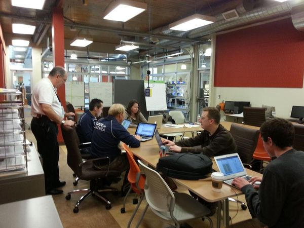
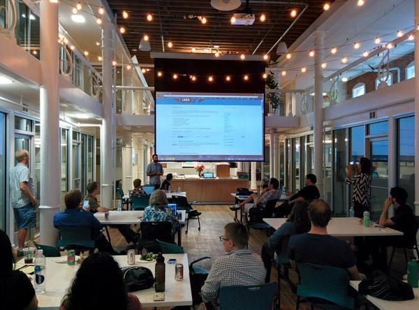

We are Salt Lake area locals who are passionate about applying technology to improve how the public interacts with government services. We are local technologists, designers, storytellers and champion citizens who partner with governments to collaborate on addressing Utahns’ pain points. We believe that leveraging diverse skill sets and experiences is the best way to produce solutions that will broadly and positively impact the public.
We cultivate ideas of how to improve community access and increase understanding about how city and state entities work. Through collaboration between our organization and local government we lend our skills to offer services that will help the public better understand their government and enhance the effectiveness of their interaction with local officials.
We help communities get to know themselves better, because knowledge empowers every taxpayer dollar. We visualize and interpret data to answer governments’ own questions.
We use design thinking with governments to improve or build tech tools like ClientComm.org that close feedback loops and better deliver services to citizens.
First, start with a ‘tour of government.’ Empathy research begins: we’ll listen to government and citizens alike on their shared persistent pain points.
We’ll define the problem and brainstorm solutions rooted in the research.
Our team will quickly prototype and let the community give it a spin. We'll ensure feedback loops, so issues make way for improvements.
We’ll spread the love to other great communities, but won’t leave you in the dust. Your team will manage the solution with skills in their comfort zone, while we’re just an email away.